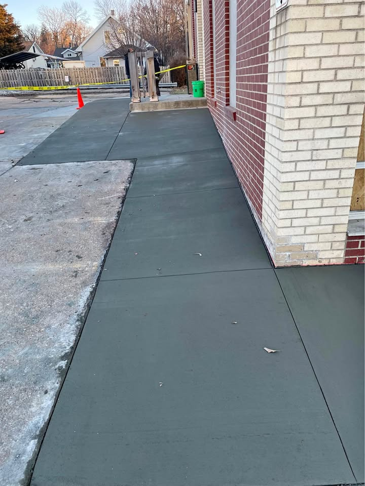

Patio Installation
Compare patio layouts and walkway tie-ins for outdoor spaces.
Sidewalk installation and concrete walkway work can improve access, drainage, and curb appeal around homes and properties in Enid. Call, text, or request a quote from the homepage for service details and availability.

Concrete walkways need to move water correctly and stay usable over time. Layout, slope, and connection points near driveways, patios, or front entries all affect whether the finished path works well long term.
Some projects are short access paths while others involve longer walkway connections, curved layouts, or replacement of damaged sections. Reviewing the actual path and conditions helps make quote comparisons more useful.
Compare patio layouts and walkway tie-ins for outdoor spaces.
Review repair options for cracked or uneven concrete sections.
See where grading and retaining work connects to access paths.
You can also review retaining wall construction, concrete repair, patio installation, and the areas we serve page.